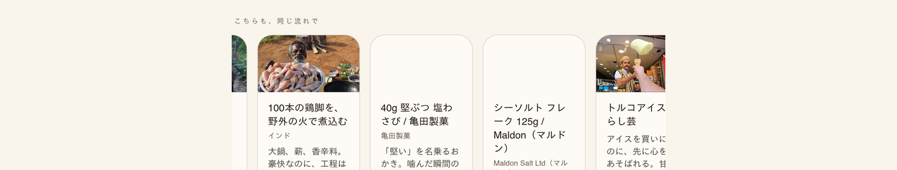
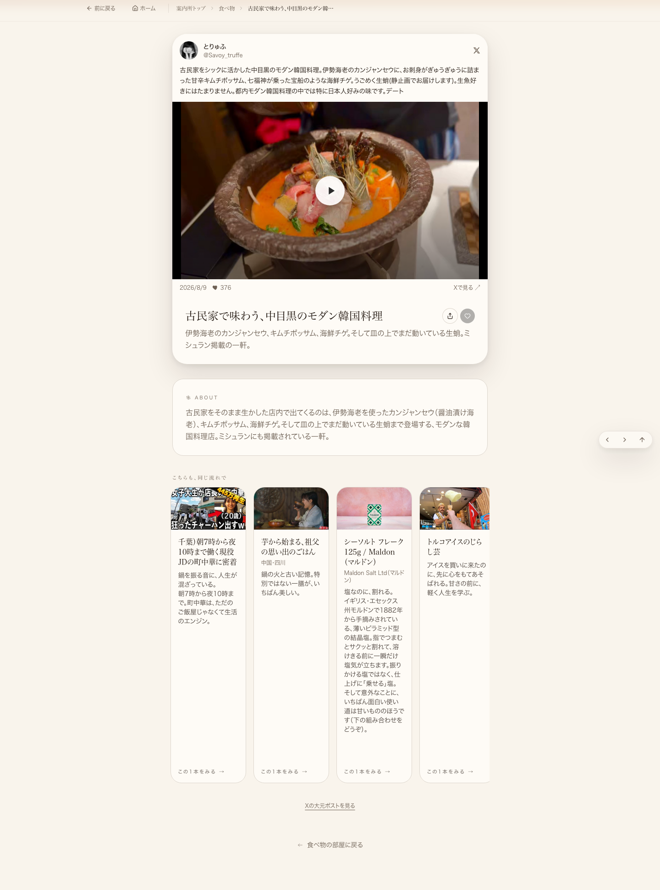
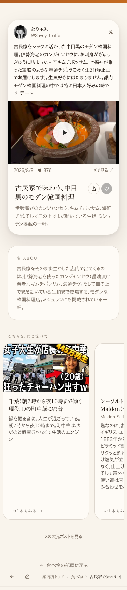

共有資料の一覧 ／ 確認ページ #749 カード上端揃え（本番で確認済み）／商品カード説明文の3行制限（コード完了・Lovable障害で反映待ち）
#749 カード上端揃え（本番で確認済み）／商品カード説明文の3行制限（コード完了・Lovable障害で反映待ち）
2026-09-12 実装・main合流・本番(GitHub Pages)反映まで実測確認
①横並びカードのサムネイル上端は本番で実測0px差（10枚全カード・375px/1440px両方）に揃っています。これは今回のご依頼の中心（上端揃え）で、すでに本番で達成・確認できています。②中目黒ページの商品カード（Maldon塩）の説明文を3行で「…」に切る修正はコード完了・GitHub main合流済みですが、Lovableの本番ビルドが2026-09-07夜から5日以上連続で失敗しており（本日も「公開」ボタンを押しましたが15分待っても反映されず、本番DOMを直接調べたところ今も修正前のコードのままでした）、この1点だけ反映を待っている状態です。
② 数字
0pxサムネイル上端のズレ（10カード×375px/1440px＝20点実測、全て同じY座標）
1/4枚中目黒ページで説明文が3行に収まらず全文表示のまま(Maldon塩カード)
5日+Lovable本番ビルドが失敗し続けている日数(09-07夜〜09-12現在)
③ 実データでのスクリーンショット
以前の記録(壊れた状態の参考)
今回実測・本番の現在地(2026-09-12 03:09)
PC横長・本番の現在地(2026-09-12)上端は揃っている。Maldon塩カードだけ説明文が全文表示で他より縦に長い(3行制限は未反映)
スマホ375px・本番の現在地(2026-09-12)
上端は揃っている(縦1列表示のため崩れは目立たない)
④ 押せるリンク
⑤ 何をどう確かめたか
| 確認項目 | 結果 |
|---|
| ①サムネイル上端の揃え(10カード実測) | 0px差・完全に揃っている |
| 説明文を3行に制限しコードをmain合流 | 完了(コミットcece339d) |
| Lovable「公開」ボタン(本日実行) | クリック成功も15分待って反映なし |
| ②説明文3行制限の本番反映 | Lovableビルド障害でブロック中(コードは完了) |
2026-09-12 朝・追加確認（別セッション）：本番ページの生HTML（curlで直接取得）を再チェックしたところ、Maldon塩・亀田製菓カードの説明文spanは今もblock ... line-clamp-3という組み合わせ（修正前のクラス構成）のままでした。本番のx-deployment-idのプロジェクト識別子部分（449ce840-5728-41e2-8923-e33bf51ed479）も変化なし＝新しいビルドはまだ出ていません。Lovableビルド障害は本日この時点でも継続中です。①上端揃えはこの障害と無関係にすでに本番へ出ているため、影響を受けず完了のままです。